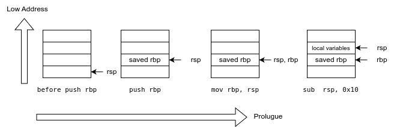

Lab1 - C 语言基础¶
在本次实验中，我们将学习基本的 C 语言编程和静态链接。
类型¶
在 C 语言中，整数类型有 long, int, short, char 等。 在绝大多数情况下，int 类型为 32 位长，而 long 类型的长度取决于 ABI。 为了避免编译目标架构的不同而导致 long、int 等类型实际长度与我们预想的不一致，在系统编程中，我们会使用定长的整形，如 uint64_t, int32_t 等。 在不同的ABI/编译器环境下，使用这一些类型保证了它们绝对是指定长度的。
例如，在 os/types.h 中：
typedef unsigned int uint;
typedef unsigned short ushort;
typedef unsigned char uchar;
typedef unsigned char uint8;
typedef unsigned short uint16;
typedef unsigned int uint32;
typedef unsigned long uint64;
我们定义了 uint64, uint32 等类型分别为 unsigned long 和 unsigned int。
由于我们面向 riscv64 架构进行编程，我们可以确保它们是 64 / 32 位的。
空间分配¶
当我们定义 (Definition) 一个变量时，编译器会在合适的位置为我们开辟一块内存空间。
下面这个例子定义了一个全局变量 a，一个 main 的栈上变量 b，一个 recursive 的栈上变量 c，并打印它们的地址。
#include <stdio.h>
int a = 0;
void recursive(int depth) {
int c;
if (depth == 5) return;
printf("[%d] c is at: %p\n", depth, &c);
recursive(depth + 1);
}
int main() {
int b;
printf("a is at: %p\n", &a);
printf("b is at: %p\n", &b);
recursive(0);
}
我们使用 gcc -O0 -static a.c && ./a.out 运行它，结果如下：
a is at: 0x4a0b10
b is at: 0x7ffd1404c53c
[0] c is at: 0x7ffd1404c51c
[1] c is at: 0x7ffd1404c4ec
[2] c is at: 0x7ffd1404c4bc
[3] c is at: 0x7ffd1404c48c
[4] c is at: 0x7ffd1404c45c
我们可以看到，a的地址是 0x4a0b10 ，而 b 与 c 的地址是以 0x7ffcc 开头的。
并且，五个 c 的地址之间均相差固定的 0x30。
这是因为编译器将 a 放置到了程序的 .data 段，而 b 与 c 则是在程序的栈上分配的。
我们通过 objdump 工具查看编译产物 a.out 中 main 符号的汇编代码：
$ llvm-objdump-16 --disassemble-symbols=main
a.out: file format elf64-x86-64
Disassembly of section .text:
00000000004017f5 <main>:
; int main() {
4017f5: 55 push rbp
4017f6: 48 89 e5 mov rbp, rsp
; printf("a is at: %p\n", &a);
4017f9: 48 8d 05 10 f3 09 00 lea rax, [rip + 0x9f310] # 0x4a0b10 <a>
401800: 48 89 c6 mov rsi, rax
401803: 48 8d 05 18 18 07 00 lea rax, [rip + 0x71818] # 0x473022 <dummy_bucket.6+0x1e>
40180a: 48 89 c7 mov rdi, rax
40180d: b8 00 00 00 00 mov eax, 0x0
401812: e8 e9 2d 00 00 call 0x404600 <printf>
; recursive(0);
401817: bf 00 00 00 00 mov edi, 0x0
40181c: e8 94 ff ff ff call 0x4017b5 <recursive>
401821: b8 00 00 00 00 mov eax, 0x0
; }
401826: 5d pop rbp
401827: c3 ret
输出的第一行告诉我们 a.out 文件的格式是 elf64-x86-64，这代表这是一个 64 位 ELF 文件，架构为 x86-64。第二行表示我们正在反汇编其中的 .text 段。
ELF 文件的 Section
ELF（Executable and Linkable Format） 是一种用于存储可执行文件、目标代码和共享库的标准文件格式，常用于类 Unix 操作系统。
Section 是 ELF 文件中的一个部分，用于存储特定类型的数据，如代码（.text）、数据（.data）和符号表（.symtab），每个段都有其专门的用途和属性。
我们可以看到，在 401816 和 401831 处，分别有两次 call 0x404620 <printf>，这代表这调用了 printf 函数，而 printf 函数地址为 0x404620。
4017fd: 48 8d 05 0c f3 09 00 lea rax, [rip + 0x9f30c] # 0x4a0b10 <a>
401804: 48 89 c6 mov rsi, rax
401807: 48 8d 05 14 18 07 00 lea rax, [rip + 0x71814] # 0x473022 <dummy_bucket.6+0x1e>
40180e: 48 89 c7 mov rdi, rax
401811: b8 00 00 00 00 mov eax, 0x0
401816: e8 05 2e 00 00 call 0x404620 <printf>
x86-64 汇编
本手册将使用 Intel Syntax 展示 x86 的汇编代码。指令后第一个寄存器表示目的寄存器 (rd)。比如 mov rsi, rax 表示将 rax 的值赋给 rsi，lea rax, [rip + 0x71814] 表示将下一条指令的地址加上 0x71814 赋给 rax
根据 call 指令前的指令序列，我们可以推测实际调用 printf 时寄存器值。并且，根据 x86-64 架构下的函数调用约定 (Calling Convention, 前 6 个整数参数通过 rdi, rsi, rdx, rcx, r8, r9 传递)，我们可以得到调用 printf 的具体参数：
rdi:
401807: 48 8d 05 14 18 07 00 lea rax, [rip + 0x71814] # 0x473022 <dummy_bucket.6+0x1e>
40180e: 48 89 c7 mov rdi, rax
rsi:
4017fd: 48 8d 05 0c f3 09 00 lea rax, [rip + 0x9f30c] # 0x4a0b10 <a>
401804: 48 89 c6 mov rsi, rax
401816: e8 05 2e 00 00 call 0x404620 <printf>
# rdi = 0x473022, rsi = 0x4a0b10
# printf(0x473022, 0x4a0b10)
lea 指令表示把 rip (表示下一条指令的地址, 类似 PC+4) 加上一个立即数。
由于这一条指令的地址是固定的，objdump 帮我们算出了这个地址，也就是变量 a 的地址。（ 0x401804 + 0x9f30c = 0x4a0b10 ）
我们可以看出，第一次 printf 时，打印出来的地址是一个固定的数 0x4a0b10。
Question
假如说，每条指令和每个数据的地址都不是固定的，那程序应该如何寻址？
Hint: 一个 ELF 内，符号之间的偏移量是固定的。当我们对整个 ELF 的地址空间进行重定位 (Relocation) 时，我们仍然能通过 PC-Relative 偏移量寻址得到相对于当前 rip 偏移指定字节的符号。
类似的，我们观察main中第二次 printf 调用，以及 recursive 中的 printf 调用：
main:
40181b: 48 8d 45 fc lea rax, [rbp - 0x4]
40181f: 48 89 c6 mov rsi, rax
...
401831: e8 ea 2d 00 00 call 0x404620 <printf>
recursive:
4017c6: 48 8d 55 fc lea rdx, [rbp - 0x4]
...
4017de: e8 3d 2e 00 00 call 0x404620 <printf>
我们可以看到，后续 printf 打印的指针均是 [rbp - 0x4]，这个值在六次打印中均是不一致的，这是因为这两个变量被分配在 main 和 recursive 函数的栈帧 (Stack frame) 上。
在数据结构课和计算机组成原理课上，我们学习了栈 (stack) 是一种先入后出 (FILO) 的数据结构，我们对它的操作被称为压栈(push)和弹栈(pop)，并且，它是向低地址生长的，也就是说，压栈后栈顶会变小。
在进入和离开 main 时，我们发现有一串指令：
main:
4017f5: 55 push rbp # 将 rbp 寄存器的值压入栈中
4017f6: 48 89 e5 mov rbp, rsp # 将 rsp 的值赋给 rbp
4017f9: 48 83 ec 10 sub rsp, 0x10 # 将 rsp 减 0x10
...
40181b: 48 8d 45 fc lea rax, [rbp - 0x4]
40181f: 48 89 c6 mov rsi, rax
...
401831: e8 ea 2d 00 00 call 0x404620 <printf>
...
401845: c9 leave # 将 rbp 的值赋给 rsp；弹栈，并将值赋给 rbp
401846: c3 ret # 退出函数
我们发现 push rbp, mov rbp, rsp 与 leave 在语义上形成了相反的一对。
实际上，它们是函数的 prologue 和 epilogue。
分别是在进入函数时和在离开函数时执行的固定代码片段。
这两段片段构建了当前函数的栈帧（类似一对压栈和弹栈操作）。
在 x86-64 上，rsp 是 栈寄存器 stack pointer, 而 rbp 一般称为 栈帧寄存器 frame pointer。在 RISC-V 上，它们是 sp 寄存器和 fp 寄存器。

我们绘制这几条指令对程序栈、rsp寄存器和 rbp 寄存器的操作，我们可以看出，b 的实际地址是在 saved rbp 之上，指向 local variables 区域。
实际上，这部分是编译器根据函数内定义的临时变量的大小在栈上开辟的空间。
与在 .data 段的变量 a 不同，这些临时变量的地址并不是固定的，他们只在这个栈帧有效时是合法的，也就是说，当退出这个函数的时候，栈上的临时变量也就销毁了。
总结
-
当编译器在为全局变量分配空间时，它们会拥有固定的地址。对这些全局变量的寻址方式包括立即数寻址或者 PC-relative 寻址。
-
当编译器在生成函数代码时，编译器会生成 prologue 和 epiogue 来构建栈帧，并在栈上分配空间给局部变量。编译器通过偏移栈帧寄存器来寻址 (Addressing) 这些局部变量。
Question
int 类型只占 4 个字节，为什么 sub rsp, 0x10 开辟了 16 个字节的空间？在 x86-64 上行为如此，在 RISC-V 64 上呢？
结构体¶
C 语言中，结构体是对一连串数据的表示。
我们通过 struct 关键字表示该变量是一个结构体。
通常，我们将一堆相关联的数据放置在同一个结构体上。
struct proc {
enum procstate state; // Process state
int pid; // Process ID
pagetable_t pagetable; // User page table
uint64 ustack; // Virtual address of kernel stack
uint64 kstack; // Virtual address of kernel stack
struct trapframe *trapframe; // data page for trampoline.S
struct context context; // swtch() here to run process
struct proc *parent; // Parent process
};
在我们的操作系统内核上，进程 struct proc 包含了 进程状态 state，PID,页表，用户栈和内核栈地址等信息。
在对结构体指针访问其成员变量时，我们使用 -> 操作符。
在对结构体访问其成员变量时，我们使用 . 操作符。
在下面这个例子中，我们定义了一个全局变量 current_proc，它是一个指向 struct proc 的指针；我们也定义了一个 idle 变量，它的类型是 struct proc。
struct proc *current_proc;
struct proc idle;
void proc_init()
{
current_proc = &idle;
}
void yield()
{
current_proc->state = RUNNABLE;
add_task(current_proc);
sched();
}
Question
请你思考编译器为 current_proc 和 idle 变量开辟了多少字节的空间，这一些空间是在哪开辟的？
在 proc_init 初始化函数中，我们将 idle 的地址赋予 current_proc（& 是取地址符）。此时，current_proc 的值即是编译器为 idle 变量开辟的空间的起始地址。
为什么是起始地址？
我们在计算机组成原理课程上学过，RISC-V 的寻址模式 (Addressing Mode) 包含 Base displacement addressing (基地址 + 偏移量) 模式。 因为结构体中某个变量相对于结构体基地址的偏移量是在编译期已知的，所以我们可以通过某个寄存器保存该结构体的基地址，使用 ld/sw 指令中的立即数偏移量访问结构体中的成员变量。
; current_proc->state = RUNNABLE;
802013b4: 97 b7 4b 00 auipc a5, 1211
802013b8: 93 87 c7 c5 addi a5, a5, -932
802013bc: 03 b7 07 00 ld a4, 0(a5)
802013c0: 93 06 30 00 li a3, 3 # RUNNABLE = 3
802013c4: 23 20 d7 00 sw a3, 0(a4)
已知这一串汇编实现的是 current_proc->state = RUNNABLE; 语句，并且 state 相对于 struct proc 的偏移量是0。
请你解释 ld a4, 0(a5) 和 sw a3, 0(a4) 中 a5 和 a4 的值分别指向哪个变量的地址，并解释这两句汇编的语义。
如果你理解了这两句汇编的意思，你就理解了指针
现在，你能猜到为什么空指针异常时会出现 "The instruction at 0xdeadbeef referenced memory at 0x00000008. The memory could not be written." 了吗？
结构体的复制¶
#include <stdio.h>
struct mystruct {
int a;
long b;
};
struct mystruct s1;
int main() {
s1.a = 114;
s1.b = 514;
struct mystruct *ptr = &s1;
printf("ptr->a = %d\n", ptr->a);
struct mystruct onstack;
onstack = *ptr;
printf("onstack.b = %ld\n", onstack.b);
}
Question
请你在电脑上编译并执行以上代码，分析 s1, ptr 和 onstack 分别分配在哪里，其值是什么。